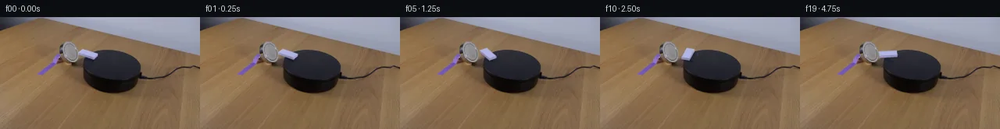

![首帧]()

Round 00
2026-11-05T06:14:27.153232+00:00像素候选变化代码 +333/−0inspection 更新
pixels 6498d57b6b754669 · code 002d3e0d1cb755d6
查看本轮 generate.py 真实 diff
--- previous/generate.py
+++ current/generate.py
@@ -0,0 +1,333 @@
+"""Deterministic local pixel continuation; no image-view, model, or external engine.
+
+Only first_frame.png supplies scene pixels. Numerical fitting, analytic cuboid
+projection, supersampled polygon rasterization, local interpolation and warping
+produce the continuation. See OBSERVATION.md and METHOD.md.
+"""
+from pathlib import Path
+import json
+import math
+import numpy as np
+from PIL import Image, ImageDraw, ImageFont
+from scipy.interpolate import RBFInterpolator, PchipInterpolator
+from scipy.ndimage import gaussian_filter, map_coordinates
+from scipy.optimize import least_squares
+from scipy.special import ndtr
+from artifact_io import save
+
+ROOT = Path(__file__).resolve().parent
+W, H = 256, 144
+ANGLES = np.array([0, 2.5, 6.5, 12, 19, 27.5, 37, 47, 57, 67,
+ 77, 87, 97, 107, 116, 124, 131, 136.5, 141, 144], float)
+SRC = np.array(Image.open(ROOT/'first_frame.png').convert('RGB'))
+assert SRC.shape == (H, W, 3)
+# Render a small numerical working patch; integer coordinates are pixel centers.
+X0, Y0, X1, Y1 = 98, 36, 129, 62
+YY, XX = np.mgrid[Y0:Y1, X0:X1].astype(float)
+PATCH = SRC[Y0:Y1, X0:X1].astype(float)
+
+
+def signed_poly_distance(points, xx=XX, yy=YY):
+ """Positive interior edge distance for a convex clockwise screen polygon."""
+ points = np.asarray(points, float)
+ edges = np.roll(points, -1, axis=0)-points
+ fields = []
+ for p, e in zip(points, edges):
+ fields.append((e[0]*(yy-p[1])-e[1]*(xx-p[0]))/np.linalg.norm(e))
+ return np.minimum.reduce(fields)
+
+
+def smooth_polygon(points, sigma=.40, xx=XX, yy=YY):
+ return ndtr(signed_poly_distance(points, xx, yy)/sigma)
+
+
+def geometry(p, degrees=0):
+ cx, cy, length, width, theta, q, thickness, sigma = p
+ theta += np.deg2rad(degrees)
+ u = .5*length*np.array([np.cos(theta), q*np.sin(theta)])
+ v = .5*width*np.array([-np.sin(theta), q*np.cos(theta)])
+ center = np.array([cx, cy])
+ top = np.array([center-u-v, center+u-v, center+u+v, center-u+v])
+ bottom = top + [0, thickness]
+ return top, bottom, theta
+
+
+def background_field():
+ # The unoccluded left edge supplies row/color transitions. Interpolate the
+ # short hidden section rather than carrying white fringe into the texture.
+ edge = PchipInterpolator([39, 40, 41, 42, 43, 44, 54, 55, 56, 57, 60, 65],
+ [155, 150, 145, 129.8, 123.6, 120.0,
+ 106.35, 106.1, 105.95, 105.4, 105.1, 105.5])
+ plate = ndtr((XX-edge(YY))/0.72)
+ # Exclude all source domino pixels and the adjacent magnet from table fits.
+ sx, sy = np.meshgrid(np.arange(100, 140), np.arange(34, 64))
+ rgb = SRC[sy, sx].astype(float)
+ original_support = np.array([[105.8, 39.8], [126.8, 46.6],
+ [123.0, 56.4], [99.2, 48.4]])
+ contaminated = signed_poly_distance(original_support, sx, sy) > -1.0
+ is_wood = ((rgb[..., 0]-rgb[..., 1] > 12)
+ & (rgb[..., 1]-rgb[..., 2] > 8)
+ & (rgb[..., 0] > 66) & ~contaminated)
+ # Warm table values, including the existing broad magnet shadow, are
+ # interpolated from nearby measured samples. Smoothing keeps hidden pixels
+ # from acquiring high frequency artifacts.
+ xy = np.stack([sx[is_wood], sy[is_wood]], axis=1)
+ wood = RBFInterpolator(xy, rgb[is_wood], kernel='thin_plate_spline',
+ smoothing=8.0, neighbors=min(50, len(xy)))
+ table_rgb = wood(np.stack([XX.ravel(), YY.ravel()], axis=1)).reshape(PATCH.shape)
+ table_rgb = np.clip(table_rgb, [65, 52, 40], [155, 130, 100])
+ # Use measured platform scanline colors, extrapolated only over the very
+ # small occluded patch. Stable source texture is retained, with no noise
+ # regenerated from frame to frame.
+ row_colors = []
+ for y in range(Y0, Y1):
+ vals = SRC[y, 127:151].astype(float)
+ valid = ((vals[:, 0] < 60) & (vals[:, 2]-vals[:, 0] < 17))
+ if valid.sum() >= 3:
+ row_colors.append(np.median(vals[valid], axis=0))
… diff truncated; 246 more lines …